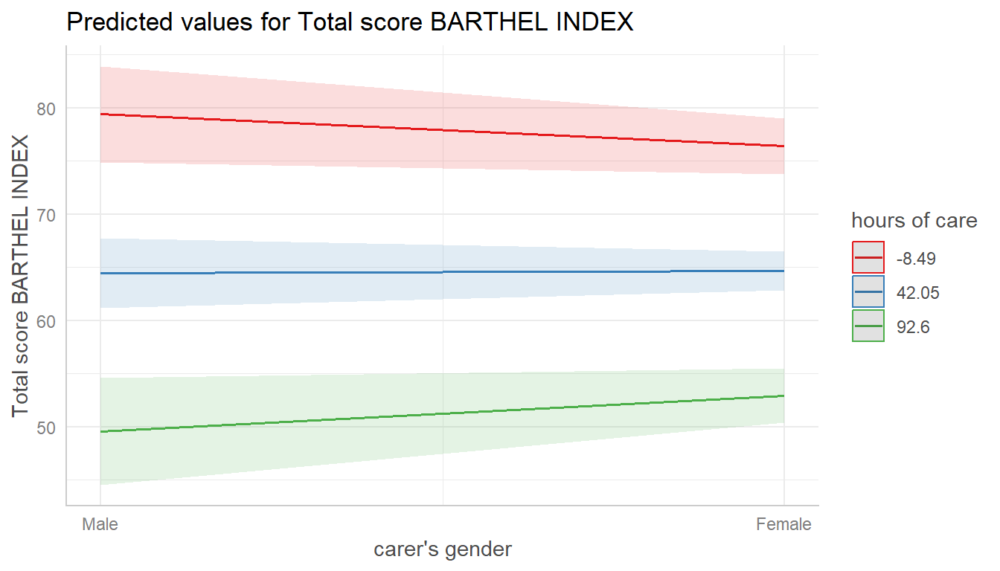
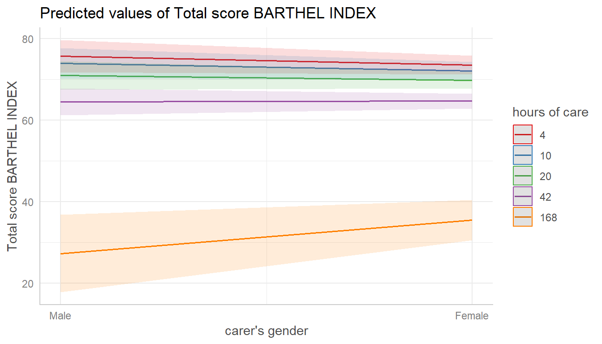
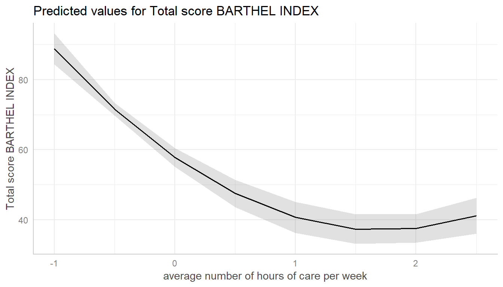
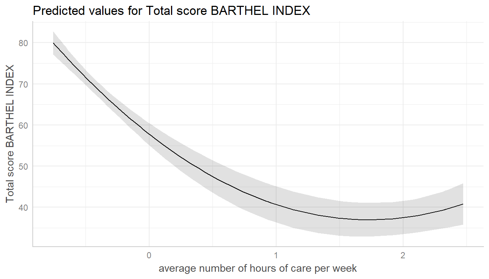

Marginal Effects at Specific Values
Daniel Lüdecke
2018-10-13
Source:vignettes/effectsatvalues.Rmd
effectsatvalues.RmdMarginal effects at specific values or levels
This vignettes shows how to calculate marginal effects at specific values or levels for the terms of interest. It is recommended to read the general introduction first, if you haven’t done this yet.
The terms-argument not only defines the model terms of interest, but each model term can be limited to certain values. This allows to compute and plot marginal effects for (grouping) terms at specific values only, or to define values for the main effect of interest.
There are several options to define these values, which always should be placed in square brackets directly after the term name and can vary for each model term.
- Concrete values are separated by a comma:
terms = "c172code [1,3]". For factors, you could also use factor levels, e.g.terms = "Species [setosa,versicolor]". - Ranges are specified with a colon:
terms = c("c12hour [30:80]", "c172code [1,3]"). This would plot all values from 30 to 80 for the variable c12hour. - Convenient shortcuts to calculate common values like mean +/- 1 SD (
terms = "c12hour [meansd]"), quartiles (terms = "c12hour [quart]") or minumum and maximum values (terms = "c12hour [mixmax]"). Seerprs_values()for the different options. - A function name. The function is then applied to all unique values of the indicated variable, e.g.
terms = "hp [exp]". - Finally, if the first variable specified in
termsis a numeric vector for which no specific values are given, a “pretty range” is calculated (seepretty_range()), to avoid memory allocation problems for vectors with many unique values. If a numeric vector is specified as second or third variable interm(i.e. if this vector represents a grouping structure), representative values (seerprs_values()) are chosen.
Specific values and value range
library(ggeffects)
library(ggplot2)
data(efc)
fit <- lm(barthtot ~ c12hour + neg_c_7 + c161sex + c172code, data = efc)
mydf <- ggpredict(fit, terms = c("c12hour [30:80]", "c172code [1,3]"))
mydf
#>
#> # Predicted values for Total score BARTHEL INDEX
#> # x = average number of hours of care per week
#>
#> # low level of education
#> x predicted conf.low conf.high
#> 30 67.147 64.037 70.257
#> 31 66.894 63.791 69.997
#> 32 66.641 63.545 69.736
#> 33 66.387 63.298 69.477
#> 34 66.134 63.051 69.217
#> 35 65.881 62.804 68.958
#> 36 65.628 62.556 68.699
#> 37 65.374 62.308 68.441
#> 38 65.121 62.059 68.183
#> 39 64.868 61.810 67.925
#> ... and 41 more rows.
#>
#> # high level of education
#> x predicted conf.low conf.high
#> 30 68.584 65.417 71.751
#> 31 68.331 65.165 71.497
#> 32 68.077 64.912 71.243
#> 33 67.824 64.660 70.989
#> 34 67.571 64.406 70.735
#> 35 67.318 64.153 70.482
#> 36 67.064 63.899 70.230
#> 37 66.811 63.645 69.977
#> 38 66.558 63.390 69.725
#> 39 66.304 63.135 69.474
#> ... and 41 more rows.
#>
#> Adjusted for:
#> * neg_c_7 = 11.84
#> * c161sex = 1.76
ggplot(mydf, aes(x, predicted, colour = group)) + geom_line()
Defining value ranges is especially useful when variables are, for instance, log-transformed. ggpredict() then typically only uses the range of the log-transformed variable, which is in most cases not what we want. In such situation, specify the range in the terms-argument.
data(mtcars)
mpg_model <- lm(mpg ~ log(hp), data = mtcars)
# x-values and predictions based on the log(hp)-values
ggpredict(mpg_model, "hp")
#>
#> # Predicted values for mpg
#> # x = hp
#>
#> x predicted conf.low conf.high
#> 3.8 58.270 49.685 66.855
#> 4.0 57.718 49.255 66.181
#> 4.2 57.193 48.846 65.540
#> 4.4 56.692 48.456 64.928
#> 4.6 56.214 48.083 64.344
#> 4.8 55.756 47.726 63.785
#> 5.0 55.316 47.384 63.249
#> 5.2 54.894 47.055 62.733
#> 5.4 54.488 46.738 62.237
#> 5.6 54.096 46.433 61.760
#> ... and 1 more rows.
# x-values and predictions based on hp-values from 50 to 150
ggpredict(mpg_model, "hp [50:150]")
#>
#> # Predicted values for mpg
#> # x = hp
#>
#> x predicted conf.low conf.high
#> 50 30.531 27.947 33.115
#> 51 30.318 27.776 32.859
#> 52 30.109 27.609 32.608
#> 53 29.904 27.445 32.362
#> 54 29.702 27.283 32.121
#> 55 29.505 27.125 31.885
#> 56 29.311 26.969 31.653
#> 57 29.120 26.816 31.425
#> 58 28.933 26.665 31.202
#> 59 28.749 26.516 30.982
#> ... and 91 more rows.Choosing representative values
Especially in situations where we have two continuous variables in interaction terms, or where the “grouping” variable is continuous, it is helpful to select representative values of the grouping variable - else, predictions would be made for too many groups, which is no longer helpful when interpreting marginal effects.
You can use
-
"minmax": minimum and maximum values (lower and upper bounds) of the variable are used. -
"meansd": uses the mean value as well as one standard deviation below and above mean value. -
"zeromax": is similar to the"minmax"option, however, 0 is always used as minimum value. This may be useful for predictors that don’t have an empirical zero-value. -
"quart"calculates and uses the quartiles (lower, median and upper), including minimum and maximum value. -
"quart2"calculates and uses the quartiles (lower, median and upper), excluding minimum and maximum value. -
"all"takes all values of the vector.
data(efc)
# short variable label, for plot
attr(efc$c12hour, "label") <- "hours of care"
fit <- lm(barthtot ~ c12hour * c161sex + neg_c_7, data = efc)
mydf <- ggpredict(fit, terms = c("c161sex", "c12hour [meansd]"))
plot(mydf)

Transforming values with functions
The brackets in the terms-argument also accept the name of a valid function, to (back-)transform predicted valued. In this example, an alternative would be to specify that values should be exponentiated, which is indicated by [exp] in the terms-argument:
# x-values and predictions based on exponentiated hp-values
ggpredict(mpg_model, "hp [exp]")
#>
#> # Predicted values for mpg
#> # x = hp
#>
#> x predicted conf.low conf.high
#> 52 30.109 27.609 32.608
#> 62 28.215 26.085 30.346
#> 65 27.707 25.671 29.742
#> 66 27.542 25.537 29.547
#> 91 24.085 22.652 25.517
#> 93 23.851 22.450 25.252
#> 95 23.622 22.251 24.993
#> 97 23.397 22.055 24.740
#> 105 22.544 21.296 23.793
#> 109 22.142 20.930 23.354
#> ... and 12 more rows.Pretty value ranges
This section is intended to show some examples how the plotted output differs, depending on which value range is used. To see the difference in the “curvilinear” trend, we use a quadratic term on a standardized variable.
library(sjmisc)
data(efc)
efc$c12hour <- std(efc$c12hour)
m <- lm(barthtot ~ c12hour + I(c12hour^2) + neg_c_7 + c160age + c172code, data = efc)
me <- ggpredict(m, terms = "c12hour")
plot(me)
ggpredict() “prettifies” the vector, resulting in a smaller set of unique values. This is less memory consuming and may be needed especially for more complex models.
You can turn off automatic “prettifying” by adding the "all"-shortcut to the terms-argument.

This results in a smooth plot, as all values from the term of interest are taken into account.
Marginal effects conditioned on specific values of the covariates
By default, the typical-argument determines the function that will be applied to the covariates to hold these terms at constant values. By default, this is the mean-value, but other options (like median or mode) are possible as well.
Use the condition-argument to define other values at which covariates should be held constant. condition requires a named vector, with the name indicating the covariate.
data(mtcars)
mpg_model <- lm(mpg ~ log(hp) + disp, data = mtcars)
# "disp" is hold constant at its mean
ggpredict(mpg_model, "hp [exp]")
#>
#> # Predicted values for mpg
#> # x = hp
#>
#> x predicted conf.low conf.high
#> 52 25.609 21.938 29.281
#> 62 24.566 21.532 27.600
#> 65 24.286 21.421 27.151
#> 66 24.195 21.384 27.006
#> 91 22.291 20.565 24.016
#> 93 22.162 20.503 23.821
#> 95 22.036 20.441 23.631
#> 97 21.912 20.378 23.446
#> 105 21.442 20.123 22.762
#> 109 21.221 19.989 22.452
#> ... and 12 more rows.
#>
#> Adjusted for:
#> * disp = 230.72
# "disp" is hold constant at value 200
ggpredict(mpg_model, "hp [exp]", condition = c(disp = 200))
#>
#> # Predicted values for mpg
#> # x = hp
#>
#> x predicted conf.low conf.high
#> 52 26.297 22.971 29.623
#> 62 25.254 22.555 27.953
#> 65 24.974 22.440 27.508
#> 66 24.883 22.402 27.364
#> 91 22.979 21.518 24.440
#> 93 22.850 21.447 24.253
#> 95 22.724 21.374 24.073
#> 97 22.600 21.300 23.900
#> 105 22.130 20.990 23.271
#> 109 21.909 20.822 22.995
#> ... and 12 more rows.